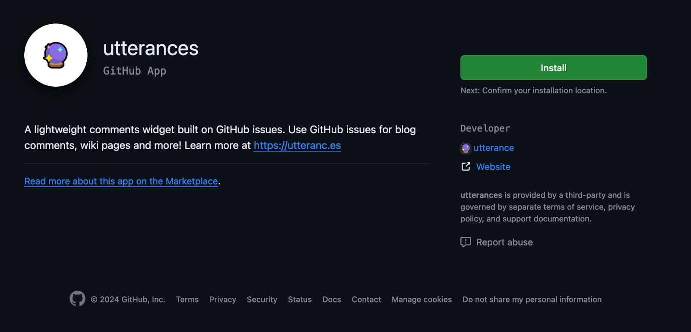
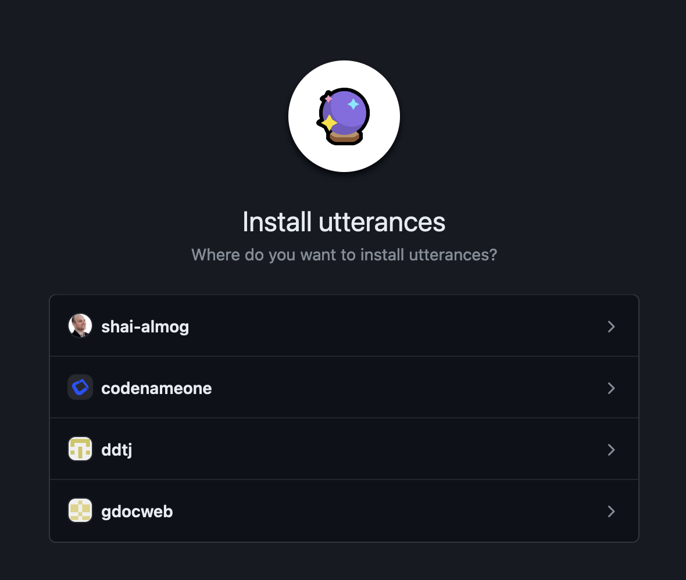
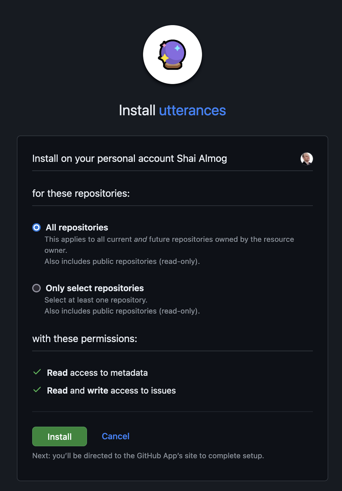

gdocweb Blog
Blog Comments
January 3rd, 2024
by Shai Almog

Comments are Now Available in gdocweb
gdocweb draws its power from Google Docs. It also inherits some of the Google Docs limitations. One such limitation is the rigidness of the platform, a great example would be in blog comments. With most tools we can simply add a comment widget and end on a high note. However, Google Docs has no feature like that.
One suggested solution is to extend Google Docs, but I think it goes a bit against the grain of a product like gdocweb. Ideally, we just want to give a small hint: comments should go here. This should be simple. Ideally, it would be hidden. That way the document can be used both in print and for the web, but we found no way to do that. In that spirit, we chose to borrow an idea from markdown and use a special syntax to convey special meanings.
We do that by using a special syntax “::COMMENTS::”. The quotes aren’t part of the syntax. In order to use this hint it must be the first entry in a paragraph, otherwise it will be ignored. You can see how this works by looking at the Google Doc we used to generate this post.
Setting up Comments
Typically, a comment requires server side code and a lot of messy management. It’s a pain. These comments rely on a tool called utterances. Utterances uses GitHub’s issue tracker which was designed to track bugs, as part of that it includes extensive comment and discussion capabilities. If an issue doesn’t exist, utterances will automatically create that issue for you. It created this issue for the comments in this page...
As the administrator of the GitHub repository I can delete comments and block commenters. Comments can include rich text using markdown and are pretty powerful.
The server side functionality is handled by a GitHub application from Utterance. To get it working you first need to install the Utterance app and give it permissions. When visiting https://github.com/apps/utterances you will need to click install:

This will lead you to this page in which you will need to select the account for the app. Since the blog is hosted on my personal GitHub account I chose that.

Next we need to pick the repositories or alternatively allow utterance access to all repositories. Once this is done the comments should work on any page where they are included...

Future Improvements
This is the tip of the iceberg. We plan to include additional hints to allow features ranging from custom HTML to sophisticated stylings and customizations. Let us know what you think in the comments!
You can see the document that generated this post here.

Comments